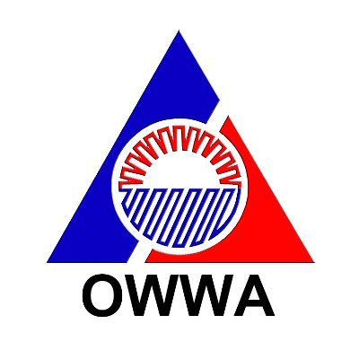

Lesson 4 : Sektor ng Palilingkod
- Ang umaalalay sa buong yugto ng produksyon, distribusyon, kalakalan, at pagkonsumo ng mga produkto sa loob o labas ng bansa. - Kilala rin ito bilang tersarya o ikatlong sektor ng ekonomiya matapos ang agrikultura at industriya.
Pormal na Sektor sa Ilalim ng Paglilingkod
Transportasyon, komunikasyon, at mga imbakan
- - Mga serbisyong pampublikong sasakyan, mga paglilingkod ng telepono at mga pinapaupahang bodega.
Kalakalan
- - Pagpapalitan ng iba’t-ibang produkto at serbisyo.
Pananalapi
- - Serbisyong may kinalaman sa bangko, insurance, at pamumuhunan.
- - Nagbibigay ng tulong pinansyal gaya ng mga bangko, bahay-sanglaan, atbp.
Paupahang bahay at Real Estate
- - Mga paupahan tulad ng mga apartment, mga developer ng subdivision, town house, at condominium.
Paglilingkod ng Pampribado
- - Lahat ng mga paglilingkod na nagmumula sa pribadong sektor ay kabilang dito.
Paglilingkod ng Pampubliko
- - Lahat ng paglilingkod na ipinagkakaloob ng pamahalaan.
Mga Ahensiyang Tumutulong sa Sektor ng Paglilingkod
Department of Labor and Employment (DOLE)
- - Pangangalaga sa kapakanan ng mga manggagawang Pilipino, pagtataguyod ng maayos na oportunidad sa trabaho, at regulasyon ng mga patakaran sa paggawa sa bansa.
Overseas Workers Welfare Administration (OWWA)

- - Tumitingin sa kapakanan ng mga Overseas Filipino Workers.
Philippine Overseas Employment Administration (POEA)
- - Isulong at paunlarin ang mga programa ukol sa paghahanapbuhay sa ibayong-dagat at pangalagaan ang kapakanan ng mga OFW.
- - Itinatag sa bisa ng Executive Order 797 (1982).
Technical Education and Skills Development Authority (TESDA)

- - Hikayatin ang buong partisipasyon ng industriya, paggawa, mga lokal na pamahalaan, at mga institusyong teknikal at bokasyonal upang sanayin at paunlarin ang kasanayan ng mga manggagawa sa bansa.
- - Itinatag sa bisa ng R.A. 7796 (1994).
Professional Regulation Commission (PRC)
- - Nangangasiwa at sumusubaybay sa gawain ng mga manggagawang propesyonal upang matiyak ang kahusayan sa paghahatid ng mga serbisyong propesyonal sa bansa.
Commission on Higher Education (CHED)
- - Nangangasiwa sa gawain ng mga pamantasan at kolehiyo sa bansa upang maitaas ang kalidad ng edukasyon sa mataas na antas.
Mga Batas na Nangangalaga sa Karapatan ng Manggagawa
Artikulo 94 - Holiday Pay
- - Tumutukoy sa bayad ng isang manggagawa na katumbas ng isang araw na sahod kahit hindi pumasok sa araw ng pista opisyal.
Republic Act 6727 - Wage Rationalization Act
- - Nagsaad ng mga mandato para sa pagsasaayos ng pinakamababang pasahod o minimum wage.
Artikulo 91-93 - Premium Pay
- - Karagdagang bayad sa manggagawa sa loob ng walong oras na trabaho sa araw ng pahinga at special days.
Artikulo 87 - Overtime Pay
- - Karagdagang bayad sa pagtatrabaho na lampas sa 8 oras sa isang araw.
Artikulo 86 - Night Shift Differential
- - Karagdagang bayad sa pagtatrabaho sa gabi na hindi bababa sa 10% ng kanyang regular na sahod sa bawat oras na ipinagtrabaho sa pagitan ng 10PM - 6AM.
Artikulo 96 - Service Charges
- - Lahat ng manggagawa sa isang establishment na kumokolekta ng service charges ay may karapatan sa isang pantay o tamang bahagi sa 85% na kabuuang koleksiyon.
Artikulo 95 - Service Incentive Leave
- - Bawat manggagawa na naglilingkod nang hindi kukulangin sa isang taon ay dapat magkaroon ng karapatan sa taunang service incentive leave ng limang araw na may bayad.
Republic Act 1161 - Maternity Leave
- - Ang bawat nagdadalang-taong manggagawa na nagtratrabaho sa pribadong sektor, kasal man o hindi, ay makakatanggap ng maternity leave.
- - Kasama ito sa benepisyong katumbas ng isang 100% na humigit kumulang na araw ng sahod ng manggagawa na nakapaloob sa batas.
Republic Act 8972 - Paternity Leave para sa mga solong magulang
- - Ipinagkaloob sa sinumang solong magulang o indibidwal na napag-iwanan ng responsibilidad ng pagiging magulang.
Republic Act 8187 - Paternity Leave
- - Maaaring magamit ng empleyadong lalaki sa unang apat na araw mula nang manganak ang legal na asawa na kaniyang kapisan.
- - Pakikipagpisan: obligasyon ng asawang babae at asawang lalaki na magsama sa isang bubong.
Presidential Decree 851 - Thirteenth Month Pay
- - Nagbibigay sa mga empleyado nang hindi lalagpas ng ika-24 ng Disyembre bawat taon.
Presidential Decree 626 - Benepisyo sa Employees Compensation Program
- - Isang compensation package sa mga manggagawa sa pampubliko at pampribadong sektor sakaling may kaganapang pagkakasakit na may kaugnayan sa trabaho.
Kahalagahan
- - Tinitiyak na makakarating sa mga mamimili ang mga produkto mula sa mga sakahan o pagawaan.
- - Nagbibigay ng trabaho sa mga mamamayan.
- - Tinitiyak ang maayos na pag-iimbak, pagtitinda ng kalakal at iba pa.
- - Nagpapataas ng GDP ng bansa.
- - Nagpapasok ng dolyar sa bansa.
Karagdagang Impormasyon
Handbook Workers Statutory Monetary Benefits
- - Nagsilbing gabay at dagdag kaalaman tungkol sa umiiral na batas sa larangan ng paggawa.
Papel ng Sektor ng Paglilingkod
- - Nagkakaloob ng lakas-paggawa, kasanayan, kaalaman, at serbisyo para sa kaunlarang pang-ekonomiya.
Karl Marx: ang mga manggagawa ang tunay na prodyuser ng bansa.
Kontraktuwalisasyon: ang isang manggagawa ay nakatali sa kontrata na mayroon siyang trabaho sa loob ng 5 buwan lamang. Kapag natapos na ang kontrata, kinakailangan niya nang umalis sa pinagtatrabahuhan.
Brain Drain: pagkaubos ng mga manggagawa patungo sa ibang bansa.
8 oras ang regular na oras ng trabaho ng isang manggagawa sa isang araw.
↑ Back to Top